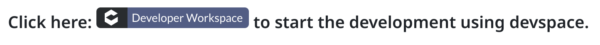
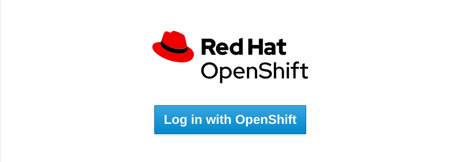
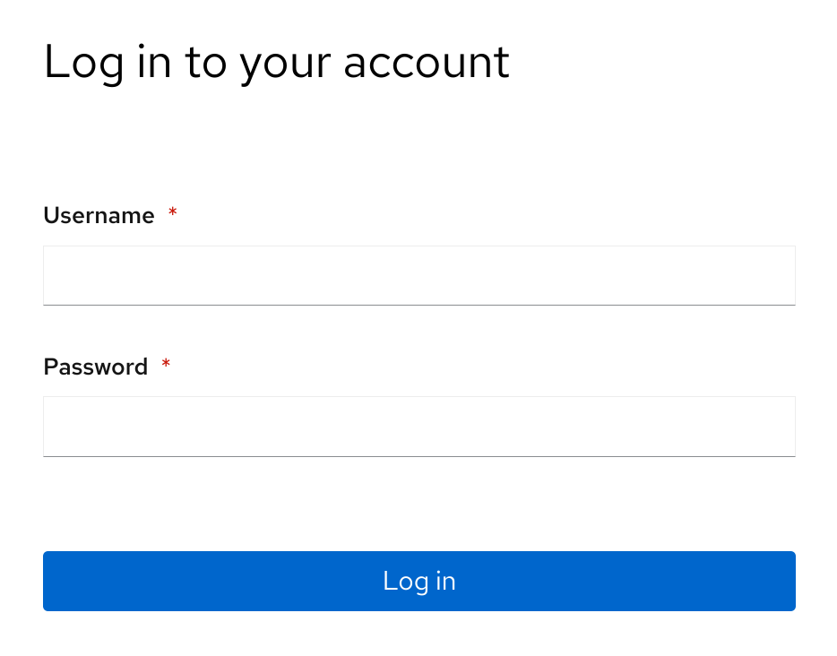
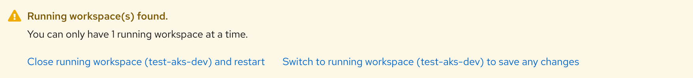
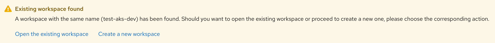
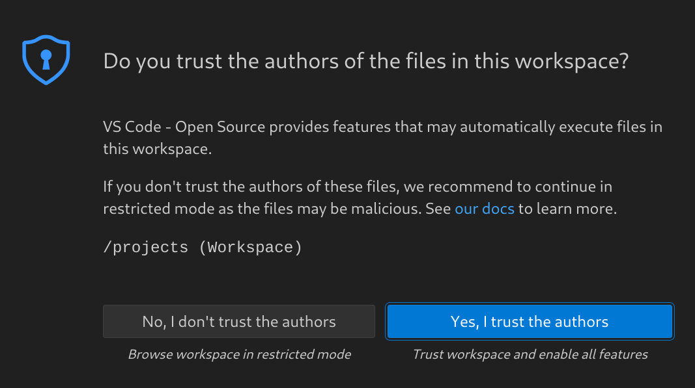
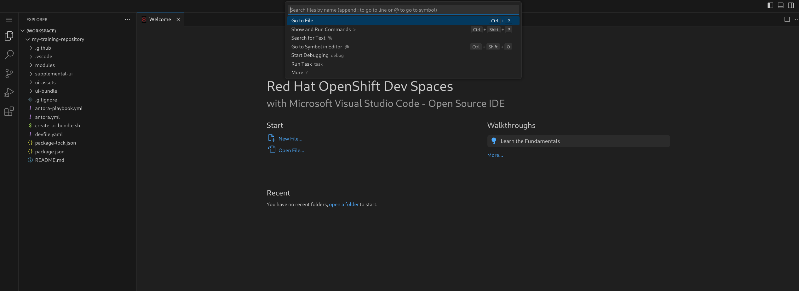

Use Devspace (skip if using local system)
Get started
Follow the instructions on Get Started page and wait for a response from the training team.
Draft content
-
Once you receive your GitHub content repository, go to your GitHub project page and, in the README section, click the
Developer Workspacebutton. -
On the next page, click the
Log in with OpenShiftbutton. -
Use the credentials provided by the training team to log in.
 -
Click on the option to
Open the existing workspaceorSwitch to running workspaceif prompted.Ignore this step if not prompted for this option.
or
 -
When the VSCode interface loads, click
Yes, I trust the authors.
Render content draft
| Make your training content repository is initialized and the changes are committed by the training team before using it in the devspace. |
-
Load your content repository in the devspace environment using the steps mentioned in FIXME
-
Click on the search bar for Workspace on top and click on Run Task option, then click devfile.
 -
Click on
0-installoption and wait for it to finish. -
Repeat the earlier step to select devfile and click on
1-watchoption this time. -
Repeat the same steps and select
2-serveoption now. -
Pop-up will be displayed at the bottom of the screen.

-
Create
Open In New Tabbutton. -
On the next pop-up message:
Do you want VS Code - Open Source to open the external website?click onOpenbutton. -
Rendered content will now be displayed in another tab.
-
You may continue with your content development in the
vscodeinterface provided by devspace. -
When you save your changes in the content files in devspace interface, the changes will be reflected in the rendered content url as soon as you refresh the url.
Next step
Refer to the Quick course content format guide for details on formatting your content layout.